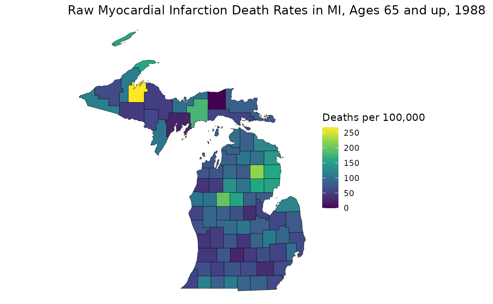

An Introduction to the RSTr Package
RSTr.RmdOverview
The RSTr package is a tool that provides a host of
Bayesian spatiotemporal models in conjunction with C++ to quickly and
easily generate spatially-smoothed age-standardized estimates for your
spatial data. This vignette introduces you to the basics of the
RSTr package and shows you how to apply the basic functions
to the included example data to get small area estimates.
Models
The models provided in the RSTr package are based on the
Besag,
York, and Mollié (1991) Conditional Autoregressive (CAR) model
(heretofore referred to as the “Univariate CAR” or “UCAR” model), which
spatially smooths data by incorporating information such as event and
population counts from neighboring geographic units (counties, census
tracts, etc.). The degree of spatial smoothing is determined by a
spatial region’s respective population size. The CAR model can be
extended to several levels of complexity, depending on the input
data:
Univariate CAR (UCAR): Spatially smooths across geographies;
Enhanced Univariate CAR (EUCAR): Spatially smooths across geographies and prevents over-smoothing;
Multivariate CAR (MCAR): Spatially smooths across geographies and sociodemographic groups; and
Multivariate Spatiotemporal CAR (MSTCAR): Spatially smooths across geographies, sociodemographic groups, and time periods.
For this vignette, we will demonstrate RSTr’s
functionality with an MSTCAR model.
Enhanced models to prevent over-smoothing
A problem with CAR models pointed out by Quick, et
al. (2021) is that of over-smoothing due to the informativeness of
the BYM model. The RSTr package provides enhancements to
the UCAR models for both Poisson- and binomial-distributed data that
prevent over-smoothing by restricting model informativeness through the
eucar() function. Enhancements for the MCAR and MSTCAR
models are under progress, and will be incorporated into the
RSTr package as they are developed.
Datasets
RSTr comes with three main datasets:
miheart, miadj, and mishp.
miheart and miadj are related to the necessary
components of our models, and mishp is a shapefile that
helps map your results. To run an MSTCAR model, two components are
necessary:
Event counts for a parameter of interest, stratified by region, group, and time period, and its corresponding population counts. These data may be binomial- or Poisson-distributed. The example dataset is binomial-distributed myocardial infarction deaths in six age groups from 1979-1988 in Michigan. Reference
miheartto see how this data looks or?miheartfor more information on the dataset. For more information on preparing your event data, readvignette("RSTr-event").An adjacency structure for your data. This is a
listthat tellsRSTrwhich regions are neighbors of one other based on their region index (i.e., the order they appear in the dataset). Referencemiadjfor an example adjacency structure list. For more information on preparing your adjacency data, readvignette("RSTr-adjacency").
Some quick notes about data setup:
Event/population data must be organized in a very specific manner.
RSTr’s models can accept up to three-dimensional arrays: in the MSTCAR model, for example, spatial regions must be on the rows, socio/demographic groups must be on the columns, and time periods must be on the matrix slices. Additionally, your event data’s regions should be listed in the same order in your adjacency structure data.Every region must have at least one neighbor. The adjacency structures must be listed in the same order as your count data.
Functions
RSTr comes with a set of functions to generate small
area estimates from your dataset. Here is a brief overview of the basic
functions and their purpose:
-
*car(): Inputs data and model specifics and creates a local folder with all associated files to prepare for sample generation; -
age_standardize(): Generates age-standardized estimates based on user-specified age groups; -
suppress_estimates(): Suppresses estimates based on reliability criteria; and -
get_estimates(): Creates a longtablecontaining information on each region/group/time in the model.
Example Model
mstcar()
With an understanding of the example datasets and the functions, we can start running our first model. The example datasets are set up to run out-of-the-box:
mod_mst <- mstcar(
name = "my_test_model",
data = miheart,
adjacency = miadj,
dir = tempdir(),
seed = 1234
)
#> Starting sampler on Batch 1 at Thu Dec 11 00:08:04
#> Generating estimates...
#> Model finished at Thu Dec 11 00:08:33Here, we use the mstcar() function to specify our model.
mstcar() accepts a few different arguments in this
case:
- The
nameargument specifies the folder where the model data lives; - The
dataargument specifies event/population data; - The
adjacencyargument specifies our adjacency structure; - The
dirargument specifies the directory where to save the folder; and - The
seedargument specifies a random seed for replicability purposes.
mstcar() creates a folder named
my_test_model in R’s temporary directory containing folders
that will hold batches of outputs for each parameter update.
Additionally, an RSTr object which holds all information
associated with the model (aside from samples) is created in the R
environment and in the temporary directory. No samples are saved in the
R environment because, given a sufficiently large dataset, MSTCAR models
can become so large that it’s impossible to hold all the model samples
in RAM. Therefore, all of the samples are saved locally. Should you want
to save your model somewhere besides the temporary directory for future
use, you can specify a folder with the dir argument.
Note that mstcar() accepts more arguments than are used
here, but these are the only ones needed to get started. Priors and
initial values, for example, can be specified manually, but this is
outside the scope of this vignette. There will also be checks performed
on the input data: if something is wrong, warnings and error messages
will tell you what is wrong and how to fix it. For a list of diagnostic
errors and what they mean, read
vignette("RSTr-troubleshooting").
The RSTr package works by generating samples in batches
and saving them locally inside of the model directory to be retrieved
once the model is finished running. Generating samples in batches helps
facilitate the tuning of the underlying MCMC algorithm and helps avoid
computational burden by only holding a fraction of the total samples in
memory at any given time. RSTr runs 6,000 iterations split
into 60 batches of size 100 each. All batches are thinned for every 10
iterations by default, as the lambdas (a.k.a., the rate
estimates) tend to exhibit autocorrelation. Moreover, thinning saves
space when writing samples to the hard drive, as batches from larger
models can balloon to gigabytes of size before thinning.
Console outputs will show the current batch number, the progress
within that batch, and the elapsed time. The model Rds file
will be updated as the sampler progresses in case you need to reload
your model at a later date. If the model crashes for any reason or R
closes while the model is being run, the model Rds file
will keep track of the current batch and pick back up where it left off
when re-run. While mstcar() is running, the R plot window
will show traceplots from a selection of estimates to check stability
and diagnose any potential issues.
If you want to learn more about mstcar() and the other
model functions, read vignette("RSTr-car").
get_estimates()
mstcar() takes care of the vast majority of model
preparation: within the function, the model is set up, samples are
generated, and our medians are estimated. Once the function finishes, we
can get an overview of our model:
mod_mst
#> RSTr object:
#>
#> Model name: my_test_model
#> Model type: MSTCAR
#> Data likelihood: binomial
#> Estimate Credible Interval: 95%
#> Number of geographic units: 83
#> Number of samples: 6000
#> Estimates age-standardized: No
#> Estimates suppressed: NoHere, we get a birds-eye-view of the model, including the model we
used (MSTCAR), the data likelihood type, the number of geographic units,
and whether our estimates have been age-standardized or suppressed along
reliability criteria. With the get_estimates() function, we
can get a more detailed look at our estimates. For this type of
mortality data, it is common to observe the rates per 100,000
population, so we set the rates_per argument in
get_estimates() to 1e5:
mst_estimates <- get_estimates(mod_mst, rates_per = 1e5)
head(mst_estimates)
#> county group year medians credible_interval_lower credible_interval_upper
#> 1 26001 35-44 1979 41.98634 29.79605 56.17417
#> 2 26003 35-44 1979 51.00178 37.86450 119.49006
#> 3 26005 35-44 1979 23.76272 16.29719 33.58478
#> 4 26007 35-44 1979 33.61042 24.15788 45.44376
#> 5 26009 35-44 1979 29.70584 22.96456 39.27994
#> 6 26011 35-44 1979 38.17390 24.89862 65.99126
#> relative_precision events population
#> 1 1.5917110 1 964
#> 2 0.6248260 1 1011
#> 3 1.3745537 0 9110
#> 4 1.5790005 0 3650
#> 5 1.8207267 0 1763
#> 6 0.9289717 0 1470The mst_estimates object contains in-depth information
about our model estimates, including the medians, the credible
intervals, the relative precisions, and the event/population counts;
region, group, and time period columns are also provided.
age_standardize()
One of the most important features of the RSTr package
is the ability to easily generate age-standardized estimates. Let’s say
we want to get age-standardized estimates for the 35-64 age group; for
our model, we use the age_standardize() function, then
specify the groups of interest, their associated standard populations,
and the name we want to give them. Since we are using data from
1979-1988, we can use 1980 standard populations from NIH
to generate a std_pop standard population vector:
std_pop <- c(68775, 34116, 9888)
mod_mst <- age_standardize(mod_mst, std_pop, new_name = "35-64", groups = c("35-44", "45-54", "55-64"))
mod_mst
#> RSTr object:
#>
#> Model name: my_test_model
#> Model type: MSTCAR
#> Data likelihood: binomial
#> Estimate Credible Interval: 95%
#> Number of geographic units: 83
#> Number of samples: 6000
#> Estimates age-standardized: Yes
#> Age-standardized groups: 35-64
#> Estimates suppressed: NoNotice now that the mod_mst object indicates we have
age-standardized our estimates and the names of our age-standardized
groups.
mst_estimates_as <- get_estimates(mod_mst)
head(mst_estimates_as)
#> county group year medians credible_interval_lower credible_interval_upper
#> 1 26001 35-64 1979 107.15247 87.92325 127.88946
#> 2 26003 35-64 1979 146.65258 119.93045 195.45817
#> 3 26005 35-64 1979 71.08941 57.78063 81.64427
#> 4 26007 35-64 1979 87.54041 73.16101 109.51904
#> 5 26009 35-64 1979 88.98631 74.88835 107.03585
#> 6 26011 35-64 1979 112.27379 92.11683 145.85171
#> relative_precision events population
#> 1 2.681076 7 3353
#> 2 1.941706 12 3105
#> 3 2.978984 27 23926
#> 4 2.407732 15 10000
#> 5 2.768063 11 5152
#> 6 2.089402 8 4517Now, get_estimates(mod_mst) shows the age-standardized
estimates. Should you want to see those instead, you can set the
argument standardized = FALSE.
suppress_estimates()
While the main benefit of RSTr is generating reliable
estimates from small-population areas, we cannot guarantee that all
estimates generated by mstcar() will be reliable.
Therefore, it is prudent to suppress estimates that are deemed
unreliable. For MSTCAR models, we can use two criteria to test for
reliability: relative precision (i.e., the ratio of the median estimate
to the width of its credible interval) and population count. For
relative precisions, we aim for a value of at least 1 (i.e., the median
is larger than the width of its credible interval), and for myocardial
infarction death rates, we typically aim for a population threshold of
at least 1,000. Using the suppress_estimates() function, we
can generate suppressed estimates for our age-standardized rates:
mod_mst <- suppress_estimates(mod_mst, threshold = 1e3)
mod_mst
#> RSTr object:
#>
#> Model name: my_test_model
#> Model type: MSTCAR
#> Data likelihood: binomial
#> Estimate Credible Interval: 95%
#> Number of geographic units: 83
#> Number of samples: 6000
#> Estimates age-standardized: Yes
#> Age-standardized groups: 35-64
#> Estimates suppressed: Yes
#> Number of reliable age-standardized rates: 819 / 830 (98.7%)
mst_estimates_as <- get_estimates(mod_mst)
head(mst_estimates_as)
#> county group year medians medians_suppressed credible_interval_lower
#> 1 26001 35-64 1979 107.15247 107.15247 87.92325
#> 2 26003 35-64 1979 146.65258 146.65258 119.93045
#> 3 26005 35-64 1979 71.08941 71.08941 57.78063
#> 4 26007 35-64 1979 87.54041 87.54041 73.16101
#> 5 26009 35-64 1979 88.98631 88.98631 74.88835
#> 6 26011 35-64 1979 112.27379 112.27379 92.11683
#> credible_interval_upper relative_precision events population
#> 1 127.88946 2.681076 7 3353
#> 2 195.45817 1.941706 12 3105
#> 3 81.64427 2.978984 27 23926
#> 4 109.51904 2.407732 15 10000
#> 5 107.03585 2.768063 11 5152
#> 6 145.85171 2.089402 8 4517mod_mst now shows us that our estimates are suppressed
and indicates the number of reliable rates.
If you want to learn more about get_estimates(),
age_standardize(), and suppress_estimates(),
read vignette("RSTr-estimates").
Illustrative Example: Mapping Estimates
We can get a better picture of the geographic patterns in our data
with a map. Using ggplot (or your favorite mapping
package), Let’s see how the (non-age-standardized) estimates were
smoothed:
library(ggplot2)
# Original Myocardial Infarction Death Rates in MI, Ages 35-64, 1988
estimates_88 <- mst_estimates_as[mst_estimates_as$year == "1988", ]
estimates_3564 <- estimates_88[estimates_88$group == "35-64", ]
raw_3564 <- (estimates_3564$events / estimates_3564$population * 1e5)
ggplot(mishp) +
geom_sf(aes(fill = raw_3564)) +
labs(
title = "Raw Myocardial Infarction Death Rates in MI, Ages 65 and up, 1988",
fill = "Deaths per 100,000"
) +
scale_fill_viridis_c() +
theme_void()
# Spatially Smoothed MI Death Rates in MI
est_3564 <- estimates_3564$medians
ggplot(mishp) +
geom_sf(aes(fill = est_3564)) +
labs(
title = "Smoothed Myocardial Infarction Death Rates in MI, Ages 35-64, 1988",
fill = "Deaths per 100,000"
) +
scale_fill_viridis_c() +
theme_void()This map helps us see how RSTr smooths rates. First,
notice how the range of the two plots are different: the smoothed map
has a smaller range because RSTr stabilizes high and low
extreme values which are usually caused by low population counts. Also,
notice how the transitions between high-rate and low-rate regions are
more gradual on the smoothed map. This is a consequence of using
neighboring regions to inform and stabilize estimates.
From here, we can get a better idea of how these maps contrast. For
example, on the first map, the largest region of interest is the middle
portion of the Lower Peninsula (LP), but on the smoothed map, much of
this area has attenuated rates. On the flip side, many areas in the
Upper Peninsula (UP) have relatively lower rates on the first map, but
we can see on the smoothed map that the highest rate in the state is in
the UP. The higher-rate areas on the LP are focused around counties on
Saginaw Bay in the east, indicating that these areas may require more
attention than previously thought. These are the kinds of inferences
that can be made using estimates generated by the RSTr
package and the main motivation for running this spatiotemporal
model.
Closing Thoughts
This vignette introduces you to inputting data into the
mstcar() function, extracting estimates with the
get_estimates() function, age-standardizing estimates with
the age_standardize() function, suppressing estimates with
the suppress_estimates() function, and finally making a map
with estimates gathered from get_estimates() function. What
we’ve discussed here is just scratching the surface of the
RSTr package. Other package vignettes will dive deeper into
the intricacies of each component of the package. All of these things
together will ensure you get the most out of using
RSTr.